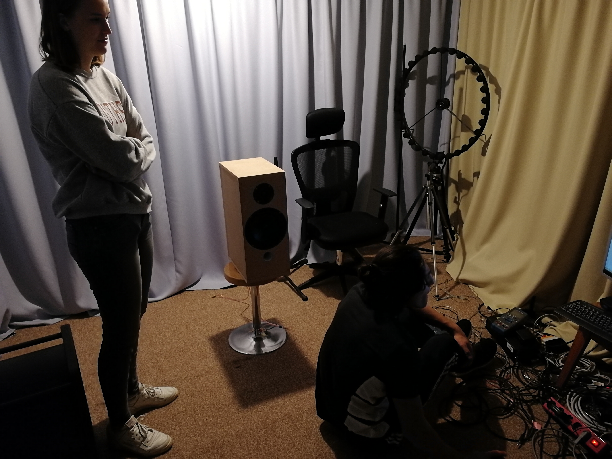
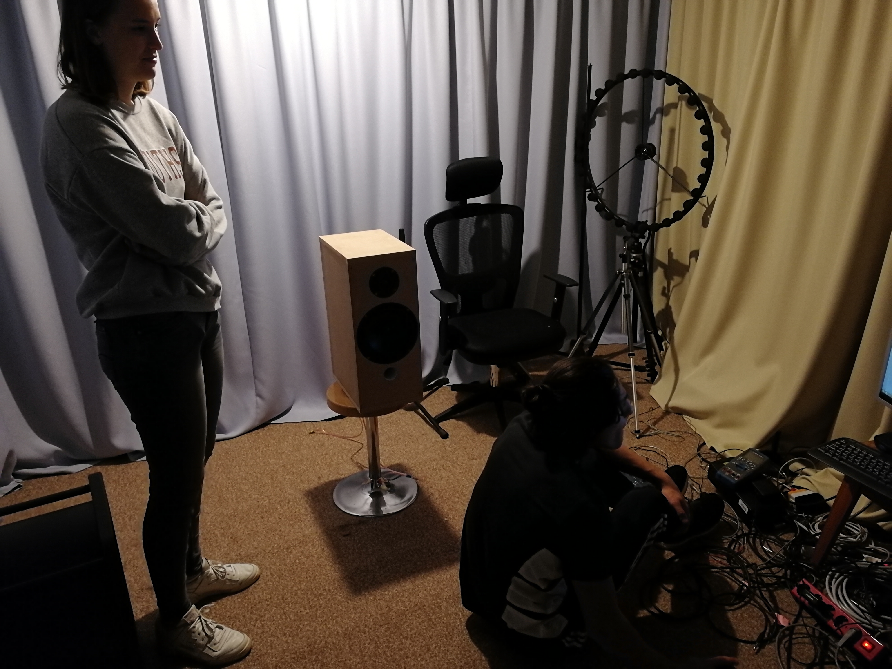
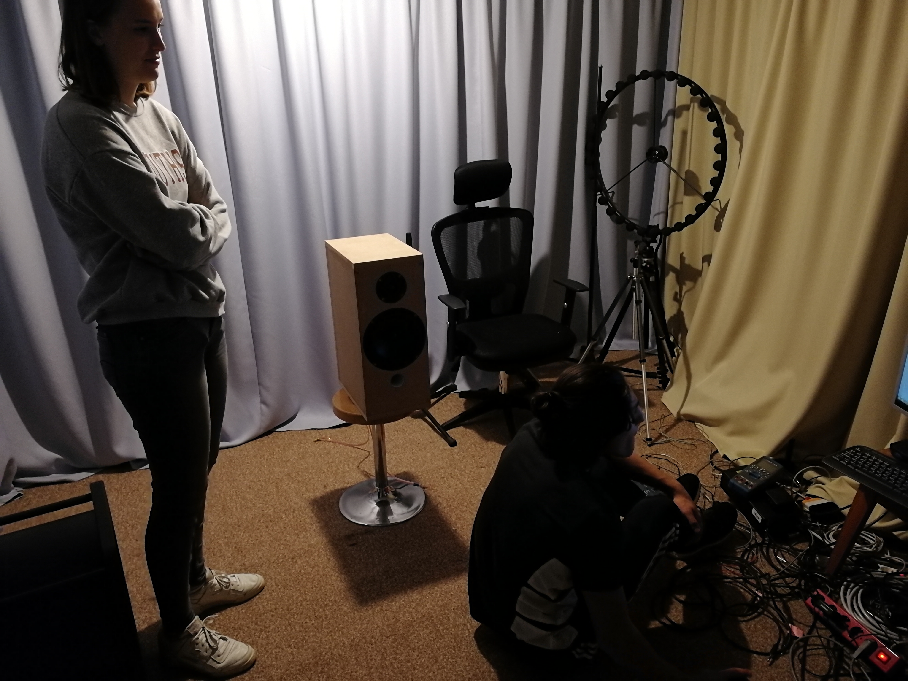

Izvajanje meritev
Ugotovili smo, da za izdelavo zvočnika potrebujemo natančno analizo zvočnikov, ki jih bomo vgradili v škatlo.
Pri tem nam je pomagal dr. Samo Beguš s Fakultete za elektrotehniko Univerze v Ljubljani. Odločili smo se, da
si bomo pomagali s prostodostopnim programom Room EQ Wizard. Podatki, s katerimi opišemo vsak zvočnik, se imenujejo
Thiele-Small parametri oz. TS parametri. Program Room EQ Wizard oz. REW izračuna TS parametre z dvema
meritvama impedance - pri drugi meritvi dodamo na membrano zvočnika znano maso. Program na podlagi razlik med
izmerjenima impedancama neobtežene in obtežene membrane izračuna TS parametre.
Na spletni strani programa (www.roomeqwizard.com/) je jasno opisan postopek meritve
impedance (www.roomeqwizard.com/) in
izračuna TS parametrov (www.roomeqwizard.com/)
Za vse zvočnike, ki smo jih prejeli, smo opravili meritve impedance v gluhi sobi Fakultete za elektrotehniko
UL in tako izračunali TS parametre za vse zvočnike. Rezultati naših meritev so zbrani v tabeli spodaj.
 
V programu smo kasneje primerjali podatke dejanske meritve obeh s podatki, ki jih dobimo, če seštejemo posamezni meritvi.
Izkaže se, da podatki ne sovpadajo. To nas je presenetilo, zato smo raziskovali naprej.
Ugotovili smo, da obstaja t.i. akustični zamik.

V programu smo kasneje primerjali podatke dejanske meritve obeh s podatki, ki jih dobimo, če seštejemo posamezni meritvi.
Izkaže se, da podatki ne sovpadajo. To nas je presenetilo, zato smo raziskovali naprej.
Ugotovili smo, da obstaja t.i. akustični zamik.

Gre za to, da ni povsem jasno, kje se pri vsakem zvočniku zvok "rodi". Z analizo podatkov smo ugotovili, da je izvor zvoka pri nizkotonskem zvočniku glede na visokotonskega zamaknjen za 24 mm (konkretno za zvočnika P21RE4X/DC in 27TFFD). Pomagali smo si s programom VituixCAD.
TS parametri
| Podjetje | Model |
|---|---|
| ScanSpeak | R2604/8320000 |
| ScanSpeak | 10F/8414G10 |
| ScanSpeak | 18W/8434G00 |
| ScanSpeak | 22W/8534G00 |
| SEAS | H0978-06 27TFFD |
| SEAS | H0442-08 P21RE4X/DC |
| SEAS | H1291-08 W15CY/TV-NHT |

Gre za to, da ni povsem jasno, kje se pri vsakem zvočniku zvok "rodi". Z analizo podatkov smo ugotovili, da je izvor zvoka pri nizkotonskem zvočniku glede na visokotonskega zamaknjen za 24 mm (konkretno za zvočnika P21RE4X/DC in 27TFFD). Pomagali smo si s programom VituixCAD.